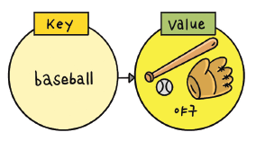
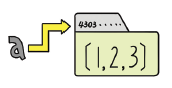

odd = [1, 3, 5, 7, 9]이번 실습에서는 python programining 기초에 대해서 학습 할 예정이다. 기본적인 코딩 실습을 통해 파이썬 프로그램 코딩에 익숙해지는 단계이다.
강의자료를 VScode로 실행해보는법
- 미리 만들어놓은 강의자료 Github 링크 에서 강의자료는 다운로드 한다.
- Visual Studio Code를 실행한다.
- 파일 열기 혹은 소스코드 드레그 인을 통해 코딩 파일을 연다.
- 코딩 파일을 수행한다.
이 문서를 구글 Colab에서 쉽게 실행해보는 방법은
- 미리 만들어놓은 Colab 링크를 눌러 본 .ipynb 파일을 구글 Colab에서 바로 열 수 있다. 이때 구글에 로그인을 해야 한다.
- 아무 셀이나 선택한 후 Ctrl+Enter를 눌러 실행해보면 [경고: 이 노트는 Google에서 작성하지 않았습니다]라고 뜨는데 실행 전에 모든 런타임 재설정을 선택한 채로 무시하고 계속하기를 눌러준다.
모든 런타임 재설정이 뜰 텐데 예를 눌러준다.- 잠시 구글 서버의 배치가 되면서 우상단에 연결중 -> 초기화중 -> 연결됨이 뜨면서 실행이 가능한 상태가 된다.
구글 Colab에서 실습후 저장하는법
쉽게 실행보는법을 따라왔다면 Colab에서 임시 노트북으로 열리기 때문에 파일->드라이브로 저장을 눌러서 여러분의 구글 드라이브에 저장하거나 파일 -> .ipynb 다운로드를 눌러서 다운로드 해준다.
리스트 자료형
리스트는 어떻게 만들고 사용할까?
리스트를 사용하면 1, 3, 5, 7, 9의 숫자 모음을 다음과 같이 간단하게 표현할 수 있다.
리스트를 만들 때는 위에서 보는 것과 같이 대괄호([])로 감싸 주고 각 요솟값은 쉼표(,)로 구분해 준다.
리스트명 = [요소1, 요소2, 요소3, …]
리스트의 예;
a = []
b = [1, 2, 3]
c = ['Life', 'is', 'too', 'short']
d = [1, 2, 'Life', 'is']
e = [1, 2, ['Life', 'is']]비어 있는 리스트는 a = list() 로 생성할 수 있다.
리스트는 a처럼 아무것도 포함하지 않아 비어 있는 리스트([])일 수도 있고, b처럼 숫자를 요솟값으로 가질 수도 있으며, c처럼 문자열을 요솟값으로 가질 수도 있다.
또한 d처럼 숫자와 문자열을 함께 요솟값으로 가질 수도 있고, e처럼 리스트 자체를 요솟값으로 가질 수도 있다. 즉, 리스트 안에는 어떠한 자료형도 포함할 수 있다.
리스트의 인덱싱과 슬라이싱
리스트 역시 문자열처럼 인덱싱을 적용할 수 있다. 먼저 a 변수에 [1, 2, 3] 값을 설정한다.
a = [1, 2, 3]
a[1, 2, 3]a[0] + a[2]4a[2]+a[1]5a[-1]3a = [1, 2, 3, ['a', 'b', 'c']]a[-1]['a', 'b', 'c']a[-1][1]'b'a[-1][-1]'c'삼중 리스트에서 인덱싱하기
a = [1, 2, ['a', 'b', ['Life', 'is']]]a[2][2][1]'is'a[2][2][0]'Life'리스트의 슬라이싱
a = [1, 2, 3, 4, 5]
a[0:2][1, 2]a = "12345"
a[0:2]'12'몇가지 다른 예
a = [1, 2, 3, 4, 5]
b = a[:2]
c = a[2:]b,c([1, 2], [3, 4, 5])중첩된 리스트에서 슬라이싱하기
a = [1, 2, 3, ['a', 'b', 'c'], 4, 5]
a[2:5][3, ['a', 'b', 'c'], 4]b, c를 슬라이싱 하면?
a[3][1:]['b', 'c']리스트 연산하기
리스트 역시 +를 사용해서 더할 수 있고 *를 사용해서 반복할 수 있다.
문자열과 마찬가지로 리스트에서도 되는지 직접 확인해 보자.
a = [1, 2, 3]
b = [4, 5, 6]
a + b[1, 2, 3, 4, 5, 6]리스트 사이에서 +는 2개의 리스트를 합치는 기능을 한다.
문자열에서 “abc” + “def” = “abcdef”가 되는 것과 같은 이치이다.
리스트 반복하기(*)
a = [1, 2, 3]
a * 3[1, 2, 3, 1, 2, 3, 1, 2, 3]리스트 길이 구하기
리스트 길이를 구하기 위해서는 다음처럼 len 함수를 사용해야 한다.
a = [1, 2, 3]
len(a)3초보자가 범하기 쉬운 리스트 연산 오류
a = [1, 2, 3]
a[2] + "hi"--------------------------------------------------------------------------- TypeError Traceback (most recent call last) Cell In[9], line 2 1 a = [1, 2, 3] ----> 2 a[2] + "hi" TypeError: unsupported operand type(s) for +: 'int' and 'str'
a[2]에 저장된 값은 3이라는 정수인데 “hi”는 문자열이다. 정수와 문자열은 당연히 서로 더할 수 없기 때문에 오류가 발생한 것이다.
str(a[2]) + "hi"'3hi'리스트의 수정과 삭제
리스트는 값을 수정하거나 삭제할 수 있다.
리스트의 값 수정하기
a = [1, 2, 3]
a[2] = 4
a[1, 2, 4]del 함수를 사용해 리스트 요소 삭제하기
a = [1, 2, 3]
del a[1]
a[1, 3]del a[x]는 x번째 요솟값을 삭제한다. 위에서는 a 리스트에서 a[1]을 삭제했다. del 함수는 파이썬이 자체적으로 가지고 있는 삭제 함수이며 다음과 같이 사용한다.
del 객체
객체란 파이썬에서 사용되는 모든 자료형을 말한다. 다음처럼 슬라이싱 기법을 사용하여 리스트의 요소 여러 개를 한꺼번에 삭제할 수도 있다.
a = [1, 2, 3, 4, 5]
del a[2:]
a[1, 2]4, 5만 남기고 삭제하기
# 직접 실행해보세요.
a = [1, 2, 3, 4, 5]
del a[:3]
a[4, 5]리스트 관련 함수
문자열과 마찬가지로 리스트 변수 이름 뒤에 ’.’를 붙여 여러 가지 리스트 관련 함수를 사용할 수 있다.
유용하게 사용하는 리스트 관련 함수 몇 가지만 알아보자.
리스트에 요소 추가하기 - append
append의 사전적 의미는 ’덧붙이다, 첨부하다’이다.
이 뜻을 안다면 다음 예가 바로 이해될 것이다.
append(x)는 리스트의 맨 마지막에 x를 추가하는 함수이다.
a = [1, 2, 3]
a.append(4)
a[1, 2, 3, 4]a.append(5)
a[1, 2, 3, 4, 5]리스트 안에는 어떤 자료형도 추가할 수 있다. 다음 예는 리스트에 다시 리스트를 추가한 결과이다.
a.append([5, 6])
a[1, 2, [5, 6]]리스트 정렬 - sort
sort 함수는 리스트의 요소를 순서대로 정렬해 준다.
a = [1, 4, 3, 2,1,7,5,2,5]
a.sort()
a[1, 1, 2, 2, 3, 4, 5, 5, 7]문자 역시 알파벳 순서로 정렬할 수 있다.
a = ['a', 'c', 'b']
a.sort()
a['a', 'b', 'c']리스트 뒤집기 - reverse
reverse 함수는 리스트를 역순으로 뒤집어 준다. 이때 리스트 요소들을 순서대로 정렬한 다음 다시 역순으로 정렬하는 것이 아니라 현재의 리스트를 그대로 거꾸로 뒤집는다.
a = ['a', 'c', 'b']
a.reverse()
a['b', 'c', 'a']인덱스 반환 - index
index(x) 함수는 리스트에 x 값이 있으면 x의 인덱스 값(위칫값: 방의)을 리턴한다.
a = [1, 2, 4,3]
a.index(3)3a.index(1)0a.index(0)--------------------------------------------------------------------------- ValueError Traceback (most recent call last) Cell In[16], line 1 ----> 1 a.index(0) ValueError: 0 is not in list
리스트에 요소 삽입 - insert
insert(a, b)는 리스트의 a번째 위치에 b를 삽입하는 함수이다.
파이썬은 숫자를 0부터 센다는 것을 반드시 기억하자.
a = [1, 2, 3]
a.insert(0, 4)
a[4, 1, 2, 3]위 예는 0번째 자리, 즉 첫 번째 요소인 a[0] 위치에 값 4를 삽입하라는 뜻이다.
a.insert(3, 5)
a[4, 1, 2, 5, 3]위 예는 리스트 a의 a[3], 즉 네 번째 요소 위치에 값 5를 삽입하라는 뜻이다.
리스트 요소 제거 - remove
remove(x)는 리스트에서 첫 번째로 나오는 x를 삭제하는 함수이다.
a = [1, 2, 3, 1, 2, 3]
a.remove(3)
a[1, 2, 1, 2, 3]a가 3이라는 값을 2개 가지고 있을 경우, 첫 번째 3만 제거되는 것을 알 수 있다.
a.remove(3)
a[1, 2, 1, 2]remove(3)을 한 번 더 실행하면 다시 3이 삭제된다.
리스트 요소 끄집어 내기 - pop
pop()은 리스트의 맨 마지막 요소를 리턴하고 그 요소는 삭제한다.
a = [1, 2, 3]
a[1, 2]a 리스트를 다시 보면 [1, 2, 3]에서 3을 끄집어 내고 최종적으로 [1, 2]만 남는 것을 확인할 수 있다.
pop(x)는 리스트의 x번째 요소를 리턴하고 그 요소는 삭제한다.
a = [1, 2, 3]
b=a.pop()print(a,b)[1, 2] 3a=list('김수환')
a.pop(-1)'환'a.pop(1)은 a[1]의 값을 끄집어 내어 리턴한다.
다시 a를 출력해 보면 끄집어 낸 값이 삭제된 것을 확인할 수 있다.
리스트에 포함된 요소 x의 개수 세기 - count
count(x)는 리스트 안에 x가 몇 개 있는지 조사하여 그 개수를 리턴하는 함수이다.
a = [1, 2, 3, 1]
a.count(1)21이라는 값이 리스트 a에 2개 들어 있으므로 2를 리턴한다.
리스트 확장 - extend
extend(x)에서 x에는 리스트만 올 수 있으며 원래의 a 리스트에 x 리스트를 더하게 된다.
a = [1, 2, 3]
a.extend([4, 5])
a[1, 2, 3, 4, 5]b = [6, 7]
a.extend(b)
c = [8, 9,10]
a.extend(c)
a[1, 2, 3, 4, 5, 6, 7, 8, 9, 10]a.extend([4, 5])는 a += [4, 5]와 동일하다.
a += [4, 5]는 a = a + [4, 5]와 동일한 표현식이다.
튜플 자료형
튜플 tuple은 몇 가지 점을 제외하곤 리스트와 거의 비슷하며 리스트와 다른 점은 다음과 같다.
리스트는 [], 튜플은 ()으로 둘러싼다.
리스트는 요솟값의 생성, 삭제, 수정이 가능하지만, 튜플은 요솟값을 바꿀 수 없다.
튜플은 어떻게 만들까?
튜플은 다음과 같이 여러 가지 모습으로 생성할 수 있다.
t1 = ()
t2 = (1,)
t3 = (1, 2, 3)
t4 = 1, 2, 3
t5 = ('a', 'b', ('ab', 'cd'))모습은 리스트와 거의 비슷하지만, 튜플에서는 리스트와 다른 2가지 차이점을 찾아볼 수 있다.
t2 = (1,) 처럼 단지 1개의 요소만을 가질 때는 요소 뒤에 쉼표(,)를 반드시 붙여야 한다는 것과
t4 = 1, 2, 3처럼 소괄호(())를 생략해도 된다는 점이다.
튜플과 리스트의 가장 큰 차이는 요솟값을 변화시킬 수 있는지의 여부이다. 즉, 리스트의 요솟값은 변화가 가능하고 튜플의 요솟값은 변화가 불가능하다.
튜플의 요솟값을 지우거나 변경하려고 하면 어떻게 될까?
앞에서 설명했듯이 튜플의 요솟값은 한 번 정하면 지우거나 변경할 수 없다.
다음에 소개하는 두 예를 살펴보면 무슨 말인지 알 수 있을 것이다.
1. 튜플 요솟값을 삭제하려 할 때
t1 = (1, 2, 'a', 'b')
>>> del t1[0]--------------------------------------------------------------------------- TypeError Traceback (most recent call last) Cell In[4], line 2 1 t1 = (1, 2, 'a', 'b') ----> 2 del t1[0] TypeError: 'tuple' object doesn't support item deletion
2. 튜플 요솟값을 변경하려 할 때
t1 = (1, 2, 'a', 'b')
t1[0] = 'c'--------------------------------------------------------------------------- TypeError Traceback (most recent call last) Cell In[5], line 2 1 t1 = (1, 2, 'a', 'b') ----> 2 t1[0] = 'c' TypeError: 'tuple' object does not support item assignment
튜플 다루기
튜플은 요솟값을 변화시킬 수 없다는 점만 제외하면 리스트와 완전히 동일하므로 간단하게만 살펴보자.
인덱싱하기
t1 = (1, 2, 'a', 'b')
t1[0]1t1 = (1, 2, 'a', 'b')
t1[-1]'b'슬라이싱하기
t1 = (1, 2, 'a', 'b')
t1[1:]
(2, 'a', 'b')t1[:3](1, 2, 'a')튜플 더하기
t1 = (1, 2, 'a', 'b')
t2 = (3, 4)
t3 = (14123123,213123123)
t1+t2+t3(1, 2, 'a', 'b', 3, 4, 14123123, 213123123)튜플 곱하기
t2 = (3, 4)
t3 = t2 * 3
t3(3, 4, 3, 4, 3, 4)튜플 길이 구하기
t1 = (1, 2, 'a', 'b')
len(t1)4딕셔너리 자료형
사람은 누구든지 “이름” = “홍길동”, “생일” = “몇 월 며칠” 등과 같은 방식으로 그 사람이 가진 정보를 나타낼 수 있다.
파이썬은 영리하게도 이러한 대응 관계를 나타낼 수 있는 딕셔너리(dictionary) 자료형을 가지고 있다.
이번에는 이 자료형에 대해 알아보자.
요즘 사용하는 대부분의 언어도 이러한 대응 관계를 나타내는 자료형을 가지고 있는데 이를 딕셔너리라고 하고, 연관 배열(associative array)또는 해시(hash)라고도 한다.
딕셔너리는 단어 그대로 ’사전’이라는 뜻이다. 즉 “people”이라는 단어에 “사람”, “baseball”이라는 단어에 “야구”라는 뜻이 부합되듯이 딕셔너리는 Key와 Value를 한 쌍으로 가지는 자료형이다.
예컨대 Key가 “baseball”이라면 Value는 “야구”가 될 것이다.

딕셔너리는 리스트나 튜플처럼 순차적으로(sequential) 해당 요솟값을 구하지 않고 Key를 통해 Value를 얻는다.
이것이 바로 딕셔너리의 가장 큰 특징이다.
baseball이라는 단어의 뜻을 찾기 위해 사전의 내용을 순차적으로 모두 검색하는 것이 아니라 baseball이라는 단어가 있는 곳만 펼쳐 보는 것이다.
딕셔너리는 어떻게 만들까?
다음은 딕셔너리의 기본 모습이다.
{Key1: Value1, Key2: Value2, Key3: Value3, ...}
Key와 Value의 쌍 여러 개가 {}로 둘러싸여 있다.
각각의 요소는 Key: Value 형태로 이루어져 있고 쉼표(,)로 구분되어 있다.
다음 딕셔너리의 예를 살펴보자.
dic = {‘name’: ‘pey’, ‘phone’: ‘010-9999-1234’, ‘birth’: ‘1118’}
위에서 Key는 각각 ‘name’, ‘phone’, ‘birth’, 각각의 Key에 해당하는 Value는 ‘pey’, ‘010-9999-1234’, ’1118’이 된다.
딕셔너리 dic의 정보 |key| value| |–|–| |name| pey| |phone| 010-9999-1234| |birth| 1118|
다음은 Key로 정숫값 1, Value로 문자열 ’hi’를 사용한 예이다.
a = {1: 'hi'}banana= {1:"helllo"}banana{1: 'helllo'}또한 다음 예처럼 Value에 리스트도 넣을 수 있다.
a = {'a': [1, 2, 3]}
a[2] = 'b'
a[3] = 'c'
a['phone'] = '010-1234-5678'
a[4] =['a,b,c,d']
a
a{'a': [1, 2, 3], 2: 'b', 3: 'c', 'phone': '010-1234-5678', 4: ['a,b,c,d']}딕셔너리 쌍 추가, 삭제하기
딕셔너리 쌍을 추가 또는 삭제하는 방법을 살펴보자.
먼저 딕셔너리에 쌍을 추가해 보자.
딕셔너리 쌍 추가하기
a = {1: 'a'}
a[2] = 'b'
a
# 'c'{1: 'a', 2: 'b'}{1: ‘a’} 딕셔너리에 a[2] = ‘b’와 같이 입력하면 딕셔너리 a에 Key와 Value가 각각 2와 ’b’인 {2: ’b’} 딕셔너리 쌍이 추가된다.
a['name'] = 'pey'
a{1: 'a', 2: 'b', 'name': 'pey'}딕셔너리 a에 {‘name’: ‘pey’} 쌍이 추가되었다.
a[3] = [1, 2, 3]a{1: 'a', 2: 'b', 'name': 'pey', 3: [1, 2, 3]}딕셔너리 요소 삭제하기
del a[1]
a{2: 'b'}a{'a': [1, 2, 3], 2: 'b', 3: 'c', 'phone': '010-1234-5678'}위 예제는 딕셔너리 요소를 지우는 방법을 보여 준다.
del 함수를 사용해서 del a[key] 를 입력하면 지정한 Key에 해당하는 {Key: Value} 쌍이 삭제된다.
딕셔너리를 사용하는 방법
’딕셔너리는 주로 어떤 것을 표현하는 데 사용할까?’라는 의문이 들 것이다.
예를 들어 4명의 사람이 있다고 가정하고 각자의 특기를 표현할 수 있는 좋은 방법에 대해서 생각해 보자.
리스트나 문자열로는 표현하기가 매우 까다로울 것이다. 하지만 파이썬의 딕셔너리를 사용하면 이 상황을 표현하기가 정말 쉽다.
다음 예를 살펴보자.
{"김연아": "피겨스케이팅", "류현진": "야구", "손흥민": "축구", "배구": "김연경", "탁구": "신유빈", "롤" : "페이커"},({'김연아': '피겨스케이팅',
'류현진': '야구',
'손흥민': '축구',
'배구': '김연경',
'탁구': '신유빈',
'롤': '페이커'},)딕셔너리에서 Key를 사용해 Value 얻기
grade = {'pey': 10, 'julliet': 99}
grade['pey']
grade['julliet']99딕셔너리는 바로 Key를 사용해서 Value를 구하는 방법이다.
위 예에서 ’pey’라는 Key의 Value를 얻기 위해 grade[‘pey’]를 사용한 것처럼 어떤 Key의 Value를 얻기 위해서는 ’딕셔너리_변수_이름[Key]’를 사용해야 한다.
a = {1:'a', 2:'b'}
a[1]'a'type(a)dicta = [1, 2, 3]
type(a)listdic = {'name':'pey', 'phone':'010-9999-1234', 'birth': '1118'}
dic['name']
dic['phone']
dic['birth']
dic['sex']='male'
dic{'name': 'pey', 'phone': '010-9999-1234', 'birth': '1118', 'sex': 'male'}딕셔너리 만들 때 주의할 사항
딕셔너리에서 Key는 고유한 값이므로 중복되는 Key 값을 설정해 놓으면 하나를 제외한 나머지 것들이 모두 무시된다는 점에 주의해야 한다.
다음 예에서 볼 수 있듯이 동일한 Key가 2개 존재할 경우, 1: ‘a’ 쌍이 무시된다.
a = {1:'a', 1:'b'}
a{1: 'b'}이렇게 Key가 중복되었을 때 1개를 제외한 나머지 Key: Value 값이 모두 무시되는 이유는 Key를 통해서 Value를 얻는 딕셔너리의 특징 때문이다.
즉, 딕셔너리에는 동일한 Key가 중복으로 존재할 수 없다.
또 1가지 주의해야 할 점은 Key에 리스트는 쓸 수 없다는 것이다
a = {[1,2] : 'hi'}--------------------------------------------------------------------------- TypeError Traceback (most recent call last) Cell In[22], line 1 ----> 1 a = {[1,2] : 'hi'} TypeError: unhashable type: 'list'
a = {(1,2) : 'hi'}
a[1,2]'hi'딕셔너리 관련 함수
Key 리스트 만들기 - keys
a = {'name': 'pey', 'phone': '010-9999-1234', 'birth': '1118'}
a.keys()dict_keys(['name', 'phone', 'birth'])list(a.keys())['name', 'phone', 'birth']a.keys()는 딕셔너리 a의 Key만을 모아 dict_keys 객체를 리턴한다.
파이썬 3.0 이후 버전의 keys 함수, 어떻게 달라졌나?
파이썬 2.7 버전까지는 a.keys() 함수를 호출하면 dict_keys가 아닌 리스트를 리턴한다.
리스트를 리턴하기 위해서는 메모리 낭비가 발생하는데, 파이썬 3.0 이후 버전에서는 이러한 메모리 낭비를 줄이기 위해 dict_keys 객체를 리턴하도록 변경되었다.
다음에 소개할 dict_values, dict_items 역시 파이썬 3.0 이후 버전에서 추가된 것들이다.
만약 3.0 이후 버전에서 리턴값으로 리스트가 필요한 경우에는 list(a.keys())를 사용하면 된다.
dict_keys, dict_values, dict_items 객체는 리스트로 변환하지 않더라도 기본적인 반복 구문(예: for 문)에서 사용할 수 있다.
for k in a.keys():
print(k)name
phone
birthdict_keys 객체는 다음과 같이 사용할 수 있다.
리스트를 사용하는 것과 별 차이는 없지만, 리스트 고유의 append, insert, pop, remove, sort 함수는 수행할 수 없다.
dict_keys 객체를 리스트로 변환하려면 다음과 같이 하면 된다.
list(a.keys())['name', 'phone', 'birth']#a = list(a.keys())
#a[0]'name'Value 리스트 만들기 - values
a.values()dict_values(['pey', '010-9999-1234', '1118'])Key를 얻는 것과 마찬가지 방법으로 Value만 얻고 싶다면 values 함수를 사용하면 된다.
values 함수를 호출하면 dict_values 객체를 리턴한다.
Key, Value 쌍 얻기 - items
a.items()dict_items([('name', 'pey'), ('phone', '010-9999-1234'), ('birth', '1118')])Key: Value 쌍 모두 지우기 - clear
a.clear()
a{}Key로 Value 얻기 - get
a = {'name': 'pey', 'phone': '010-9999-1234', 'birth': '1118'}
a.get('name')'pey'a[‘nokey’] 방식은 오류를 발생시키고 a.get(‘nokey’) 방식은 None을 리턴한다는 차이
a = {'name':'pey', 'phone':'010-9999-1234', 'birth': '1118'}
print(a.get('nokey'))Noneprint(a['nokey'])--------------------------------------------------------------------------- KeyError Traceback (most recent call last) Cell In[43], line 1 ----> 1 print(a['nokey']) KeyError: 'nokey'
딕셔너리 안에 찾으려는 Key가 없을 경우, 미리 정해 둔 디폴트 값을 대신 가져오게 하고 싶을 때는 get(x, 디폴트 값)을 사용하면 편리하다.
a.get('nokey', 'foo')'foo'해당 Key가 딕셔너리 안에 있는지 조사하기 - in
a = {'name':'pey', 'phone':'010-9999-1234', 'birth': '1118'}
'name' in aTrue'email' in aFalse‘name’ 문자열은 a 딕셔너리의 Key 중 하나이다. 따라서 ‘name’ in a를 호출하면 참(True)을 리턴한다.
이와 반대로 ’email’은 a 딕셔너리 안에 존재하지 않는 Key이므로 거짓(False)을 리턴한다.
집합 자료형
집합(set)은 집합에 관련된 것을 쉽게 처리하기 위해 만든 자료형이다.
집합 자료형은 어떻게 만들까?
집합 자료형은 다음과 같이 **set 키워드**를 사용해 만들 수 있다.
s1 = set([1, 2, 3])
s1{1, 2, 3}위와 같이 set()의 괄호 안에 리스트를 입력하여 만들거나 다음과 같이 문자열을 입력하여 만들 수도 있다.
s2 = set("Hello")
s2{'H', 'e', 'l', 'o'}집합 자료형의 특징
중복을 허용하지 않는다.
순서가 없다(Unordered).
set은 중복을 허용하지 않는 특징 때문에 데이터의 중복을 제거하기 위한 필터로 종종 사용된다.
리스트나 튜플은 순서가 있기(ordered) 때문에 인덱싱을 통해 요솟값을 얻을 수 있지만,
set 자료형은 순서가 없기(unordered) 때문에 인덱싱을 통해 요솟값을 얻을 수 없다
딕셔너리 역시 순서가 없는 자료형이므로 인덱싱을 지원하지 않는다.
만약 set 자료형에 저장된 값을 인덱싱으로 접근하려면 다음과 같이 리스트나 튜플로 변환한 후에 해야 한다.
s1 = set([1, 2, 3])
l1 = list(s1)
print(l1)
print(l1[0])[1, 2, 3]
1s2='456'
list(s2)['4', '5', '6']s1{1, 2, 3}t1 = tuple(s1)
print(t1)
print(t1[0])(1, 2, 3)
1교집합, 합집합, 차집합 구하기
set 자료형을 정말 유용하게 사용하는 경우는 교집합, 합집합, 차집합을 구할 때.
먼저 다음과 같이 2개의 set 자료형을 만든 후 따라 해 보자
s1 = set([1, 2, 3, 4, 5, 6])
s2 = set([4, 5, 6, 7, 8, 9])ss1 =list(s1)
ss2 =list(s2)ss1&ss2--------------------------------------------------------------------------- TypeError Traceback (most recent call last) Cell In[93], line 1 ----> 1 ss1&ss2 TypeError: unsupported operand type(s) for &: 'list' and 'list'
# &의 의미는 and로 해석하면 됨 (교집합)
s1 & s2{4, 5, 6}# intersection 함수를 이용해도 결과는 동일
s1.intersection(s2){4, 5, 6}합집합 구하기
::: {#847d8081 .cell 0=‘의’ 1=‘미’ 2=‘는’ 3=’ ’ 4=‘o’ 5=‘r’ 6=‘로’ 7=’ ’ 8=‘해’ 9=‘석’ 10=‘하’ 11=‘면’ 12=’ ’ 13=‘됨’ 14=’ ’ 15=‘(’ 16=‘합’ 17=‘집’ 18=‘합’ 19=‘)’ 20=‘|’ 21=‘|’ 22=‘|’ 23=‘|’ 24=‘|’ 25=‘|’ 26=‘|’ 27=‘|’ 28=‘|’ 29=‘|’ 30=‘|’ 31=‘|’ 32=‘|’ 33=‘|’ 34=‘|’ 35=‘|’ 36=‘|’ 37=‘|’ 38=‘|’ 39=‘|’ 40=‘|’ 41=‘|’ 42=‘|’ 43=‘|’ 44=‘|’ 45=‘|’ 46=‘|’ 47=‘|’ 48=‘|’ 49=‘|’ 50=‘|’ 51=‘|’ 52=‘|’ 53=‘|’ 54=‘|’ 55=‘|’ 56=‘|’ 57=‘|’ 58=‘|’ 59=‘|’ 60=‘|’ 61=‘|’ 62=‘' 63=’' execution_count=96}
s1 | s2{1, 2, 3, 4, 5, 6, 7, 8, 9}:::
# union 함수를 이용해도 결과는 동일
s1.union(s2){1, 2, 3, 4, 5, 6, 7, 8, 9}차집합 구하기
-(빼기)를 사용하면 차집합을 구할 수 있다.
s1 - s2{1, 2, 3}ss1-ss2--------------------------------------------------------------------------- TypeError Traceback (most recent call last) Cell In[97], line 1 ----> 1 ss1-ss2 TypeError: unsupported operand type(s) for -: 'list' and 'list'
s2 - s1{7, 8, 9}집합 자료형 관련 함수
값 1개 추가하기 - add
이미 만들어진 set 자료형에 값을 추가할 수 있다
s1 = set([1, 2, 3])
s1.add(4)
s1{1, 2, 3, 4}값 여러 개 추가하기 -update
s1 = set([1, 2, 3])
s1.update([4, 5, 6])
s1{1, 2, 3, 4, 5, 6}s1.update([7,8,9])
s1{1, 2, 3, 4, 5, 6, 7, 8, 9}특정 값 제거하기 - remove
s1 = set([1, 2, 3])
s1.remove(2)
s1{1, 3}불(bool) 자료형
불(bool) 자료형이란 참(True)과 거짓(False)을 나타내는 자료형이다.
True: 참을 의미한다.
False: 거짓을 의미한다.
a = True
b = Falsetype(a)bool1 == 1True2 > 1True2 < 1False# 원래 표현식
result = 3 == 3 | 4
print(result) # FALSE 출력
# 괄호를 명시한 경우
result_correct = (3 == 3) | 4
print(result_correct) # TRUE 출력False
5자료형의 참과 거짓
자료형에 참과 거짓이 있다? 라는 말이 조금 이상하게 들리겠지만, 참과 거짓은 분명히 있다.
이는 매우 중요한 특징이며 실제로도 자주 쓰인다.
| 값 | 참 or 거짓 |
|---|---|
| “python” | 참 |
| “” | 거짓 |
| [1, 2, 3] | 참 |
| [] | 거짓 |
| (1, 2, 3) | 참 |
| () | 거짓 |
| {‘a’: 1} | 참 |
| {} | 거짓 |
| 1 | 참 |
| 0 | 거짓 |
| None | 거짓 |
문자열, 리스트, 튜플, 딕셔너리 등의 값이 비어 있으면("", [], (), {}) 거짓이 되고 비어 있지 않으면 참이 된다
다음 예를 보고 자료형의 참과 거짓이 프로그램에서 어떻게 쓰이는지 간단히 알아보자.
a = [1, 2, 3, 4]
while a:
print(a.pop())4
3
2
1while 조건문: 수행할_문장
조건문이 거짓이 되면 반복문을 빠져나감
다른 예시
if []:
print("참")
else:
print("거짓")거짓if [1, 2, 3]:
print("참")
else:
print("거짓")
참a = 1
b = 7
if a > b:
print('a is bigger than b')
else:
print('b is bigger than a')b is bigger than a자료형의 값을 저장하는 공간, 변수
변수는 어떻게 만들까?
a = 1
b = "python"
c = [1, 2, 3]변수를 만들 때는 위 예처럼 =(assignment) 기호를 사용한다.
변수_이름 = 변수에_저장할_값
다른 프로그래밍 언어인 C나 JAVA에서는 변수를 만들 때 자료형의 타입을 직접 지정해야 한다.
하지만 파이썬은 변수에 저장된 값을 스스로 판단하여 자료형의 타입을 지정하기 때문에 더 편리하다.
변수란?
파이썬에서 사용하는 변수는 객체를 가리키는 것이라고도 말할 수 있다.
객체란 우리가 지금까지 보아 온 자료형의 데이터(값)와 같은 것을 의미하는 말이다
a = [1, 2, 3]
만약 위 코드처럼 a = [1, 2, 3]이라고 하면, [1, 2, 3] 값을 가지는 리스트 데이터(객체)가
자동으로 메모리에 생성되고 변수 a는 [1, 2, 3] 리스트가 저장된 메모리의 주소를 가리키게 된다.
#시드고정
import random
random.seed(10)
#메모리 주소 고정
import sys
sys.setrecursionlimit(100000)
a = [1, 2, 3]
id(a)127587712484608id 내장함수는 변수가 가리키고 있는 객체의 주소 값을 리턴하는 파이썬의 내장 함수이다.
즉, 여기에서 만든 변수 a가 가리키는 [1, 2, 3] 리스트의 주소 값은 1953734790400이라는 것을 알 수 있다.

리스트를 복사하고자 할 때
이번에는 리스트 자료형에서 가장 혼동하기 쉬운 ’복사’에 대해 설명한다.
a = [1, 2, 3]
b = aid(a)123898742098944c=b.copy()id(b)123898742098944id(c)123898742125888id(a)의 값이 id(b)의 값과 동일하다는 것을 확인할 수 있다.
즉, a가 가리키는 대상과 b가 가리키는 대상이 동일하다는 것을 알 수 있다.
a is bTruea is cFalsea[1] = 4a[1, 4, 3]b[1, 4, 3]메모리 주소를 복사한 b 변수도 변경
다른 객체(주소) 만드는 방법
b 변수를 생성할 때 a 변수의 값을 가져오면서 a와는 다른 주소를 가리키도록 만들는 2가지 방법
1. [:] 이용하기 첫 번째 방법은 다음과 같이 리스트 전체를 가리키는 [:]을 사용해서 복사하는 것이다.
a = [1, 2, 3]
b = a[:]
a[1] = 4
a[1, 4, 3]b[1, 2, 3]위 예에서 볼 수 있듯이 a 리스트 값을 바꾸더라도 b 리스트에는 아무런 영향이 없다.
2. copy 모듈 이용하기
from copy import copy
a = [1, 2, 3]
b = copy(a) id(a)2296355661312id(b)2296355674688b is aFalse변수를 만드는 여러가지 방법
a, b = ('python', 'life')(a, b) = 'python', 'life'
#튜플 부분에서도 언급했지만, 튜플은 괄호를 생략해도 된다.[a, b] = ['python', 'life']a'python'a = b = 'python'b'python'### 변수 바꾸기
a = 3
b = 5
a, b = b, a
a5연습문제 (점프투 파이썬 자료 활용)
Q1. 신사임당의 주민등록번호는 881227-2028234이다. 신사임당의 주민등록번호를 연월일(YYYYMMDD) 부분과 그 뒤의 숫자부분을 나누어 출력하세요
pin = "881227-202823"
yyyymmdd = pin[:6]
num = pin[7:]
print(yyyymmdd) # 연월일 부분 출력
print(num) # 숫자 부분 출력881227
202823Q2. 신사임당의 주민등록번호는 881227-2028234이다. 주민등록번호의 숫자를 나타내는 숫자를 출력하세요.
pin = "881227-202823"
print(pin[7])2Q3. [1, 3, 5, 4, 2] 리스트를 [5, 4, 3, 2, 1]로 출력해보세요
a = [1, 3, 5, 4, 2]
a.sort()
a.sort(reverse=True)
print(a)[5, 4, 3, 2, 1]Q4. [‘Life’, ‘is’, ‘too’, ‘short’] 리스트를 Life in too short 라는 문자열로 출력하세요.
a = ['Life', 'is', 'too', 'short']
a[1] = 'in'
#a를 문자열로
result = ' '.join(a)
print(result)Life in too shortQ5. (1, 2, 3, 4)이라는 튜플에 5 값을 추가하여 출력하세요.
a = (1, 2, 3, 4)
a = a+ (5,)
a(1, 2, 3, 4, 5)튜플은 그 값을 변경할 수 없다.
Q6. 딕셔너리 a에서 ’B’에 해당하는 값을 추출하고 삭제해보세요
a = {'A':90, 'B':80, 'C':70}
print(a.pop('B'))
a80{'A': 90, 'C': 70}Q7. a 리스트에서 중복된 숫자를 제거해서 출력하세요. (리스트로 다시 출력)
a = [1, 1, 1, 2, 2, 2, 3, 3, 3, 4, 4, 5]
b= set(a)
b = list(b)
print(b)[1, 2, 3, 4, 5]Q8. 아래 코드에서 예상되는 b 값과 그 이유에 대해서 설명하세요
a = b = [1, 2, 3]
#b는 [1,2,3] b를 [1,2,3]으로 정의했기 때문참고문헌
점프투 파이썬 from Wididocs
a = ['Life', 'is', 'too', 'short']
a[0]+' '+a[1]+' '+a[2]+' '+a[3]'Life is too short'